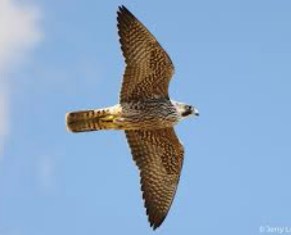
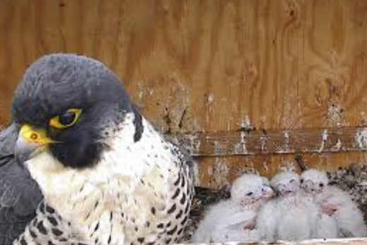
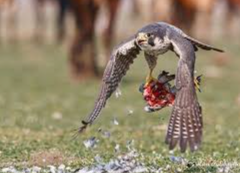

The peregrine falcon, Falco peregrinus, is widely recognized as the fastest bird on the planet, reaching speeds over 240 miles per hour (386 km/h) during its hunting stoop (high-speed dive). This medium-sized raptor is known for its long, pointed wings and sharp, hooked beak, features that make it highly efficient in capturing prey mid-air. Peregrine falcons are found on every continent except Antarctica, showcasing one of the broadest global distributions of any bird of prey. They thrive in a variety of habitats, including urban areas where tall buildings mimic the cliffs they traditionally nest on.
These remarkable hunters primarily feed on other birds, capturing their prey in flight with pinpoint accuracy. Their exceptional eyesight—estimated to be eight times more powerful than human vision—allows them to spot prey from over a mile away. The falcon’s success as a predator is partly due to its adaptability, enabling it to prey on diverse species, from small songbirds to larger waterfowl. This flexibility has also made them resilient in adapting to human-altered environments, a trait that has helped them recover from near extinction in the mid-20th century.
Despite their adaptability, peregrine falcons faced severe population declines in the 1950s and 60s due to pesticide use, particularly DDT, which caused eggshell thinning and reduced reproduction rates. Conservation efforts, including the banning of DDT and breeding programs, have helped bring populations back from the brink. Today, peregrine falcons serve as symbols of successful conservation efforts and are once again commonly observed in many parts of the world, even in cities, where they’ve become a favorite among birdwatchers and urban wildlife enthusiasts.
